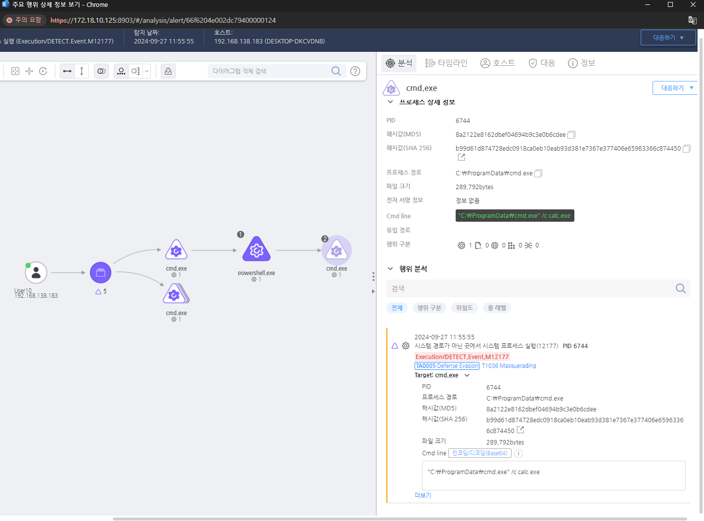

T1036.000.01 Masquerading
D3FEND
MITRE ATT&CK 액션을 기준으로 대응 방안을 작성
Detection
- Action = "CreateProcess" AND
- TargetProcess = "cmd.exe" OR "powershell.exe" OR "wscript.exe" OR "cscript.exe" OR "mshta.exe" OR "mofcomp.exe" AND
- TargetProcess_Path != "windows" OR "system32" OR "syswow64" OR "ProgramFiles" OR "Program Files (x86)" AND
- TargetProcess_FileDescription = "Microsoft Corporation"
Detection(EDR)

Response
파일 및 프로세스 모니터링을 통해 의심스러운 변경 사항을 실시간 탐지하고 대응한다.
Mitigations
애플리케이션 화이트리스트 적용 (M1038 - Execution Prevention)
- AppLocker 또는 Windows Defender Application Control(WDAC)을 사용하여 신뢰할 수 있는 애플리케이션만 실행 가능하도록 제한
- 파일의 디지털 서명 검증을 활성화하여 서명되지 않은 실행 파일 차단
- 파일 실행 경로 기반 정책 적용하여 특정 디렉터리(예:
%TEMP%, %APPDATA% 등)에서 실행되는 프로그램 제한
파일 및 프로세스 무결성 검사 (M1042 - Disable or Remove Feature or Program)
- Windows System File Checker(SFC) 및 Integrity Verification 도구를 사용하여 시스템 파일 변조 여부 확인
- PowerShell 스크립트 및 실행 파일의 무결성 검증을 수행하여 위장된 파일 탐지
- Hash 값 비교를 통해 신뢰할 수 있는 파일과 악성코드 구별
프로세스 모니터링 및 행동 기반 탐지 (M1040 - Behavior-Based Detection)
- EDR(Endpoint Detection and Response) 솔루션을 사용하여 의심스러운 프로세스 실행 탐지
- 정상적인 시스템 프로세스를 위장한 악성 프로세스 탐지 (예:
explorer.exe가 비정상적인 네트워크 연결 수행)
- 파일 실행 경로, 부모-자식 프로세스 관계 모니터링을 통해 위장된 프로세스 탐지
확장자 및 숨김 속성을 이용한 위장 방지 (M1020 - Restrict File and Directory Permissions)
- Windows 설정에서 "확장명 숨기기" 옵션을 비활성화하여
.exe, .scr 등의 확장자가 보이도록 설정
- "숨김 파일 및 시스템 파일 보기" 옵션 활성화하여 숨겨진 악성 파일 탐지 가능하도록 설정
- 비정상적인 파일명 또는 유사한 시스템 파일명을 가진 실행 파일 차단 (예:
svchost.exe 대신 svch0st.exe)
로그 및 감사 활성화 (M1047 - System Logging & Monitoring)
- Windows Event Logging을 활성화하여 실행 파일 및 스크립트 실행 기록 추적
- PowerShell ScriptBlock Logging 및 명령 실행 기록 활성화
- 파일 생성 및 실행 이벤트 로깅을 통해 위장된 실행 파일 탐지
사용자 보안 인식 교육 (M1017 - User Training & Awareness)
- 파일명 위장 공격 및 피싱 이메일에 대한 사용자 교육 진행
- 이메일 및 다운로드한 파일 실행 시 파일 확장자 및 실행 위치 확인 습관화
- 비정상적인 프로그램이 실행될 경우 즉시 보안 담당자에게 신고하도록 교육
Affected Techniques
Action 실행시 함꼐 영향을 받는 다른 Techniqes
| D3FEND |
| D3-FCA File Content Analysis |
| D3-FIM File Integrity Monitoring |
| D3-FA File Analysis |